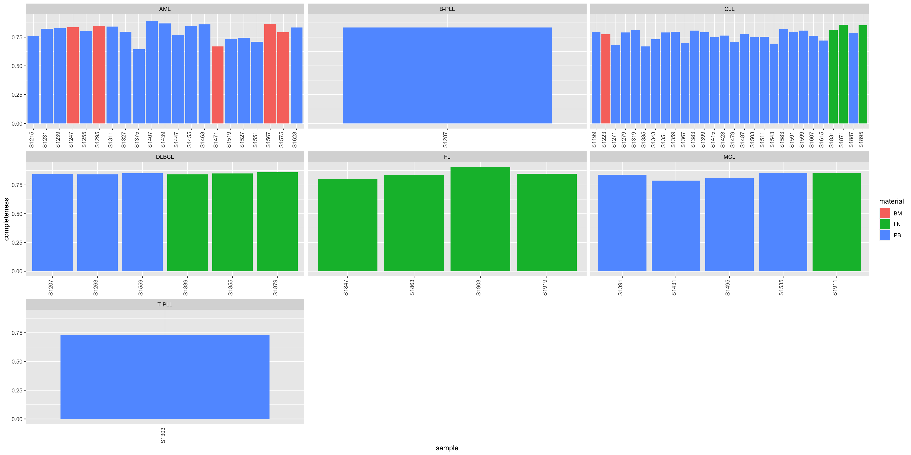
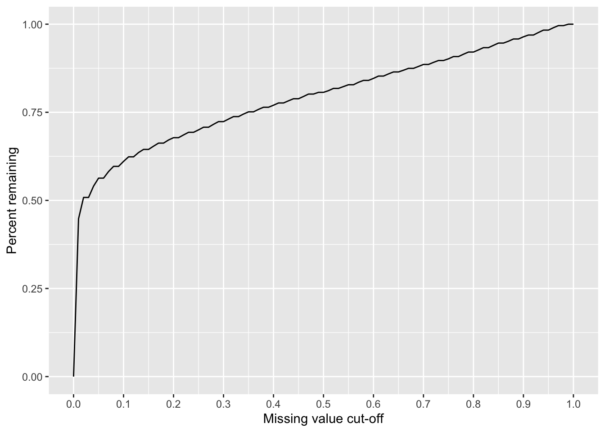
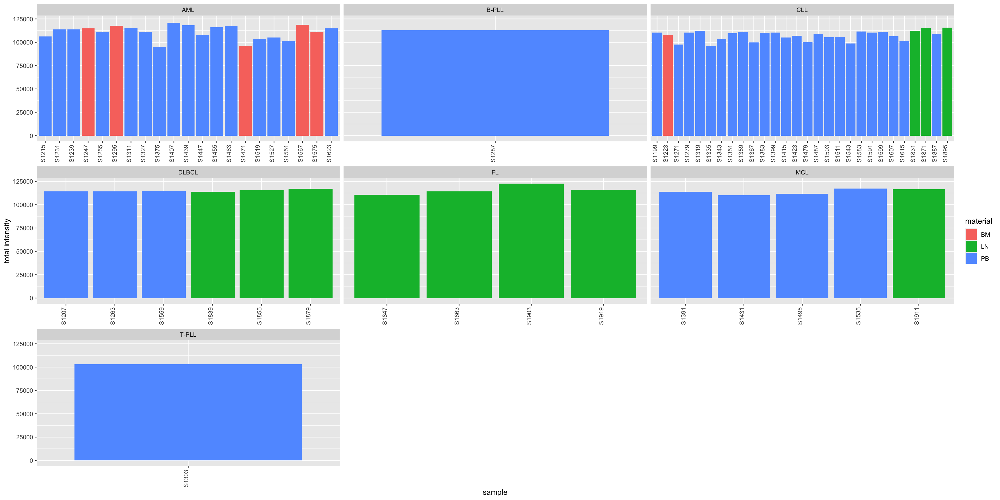
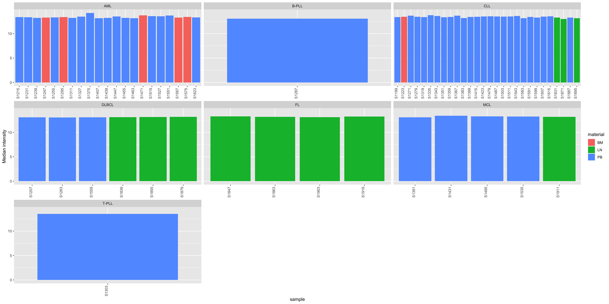
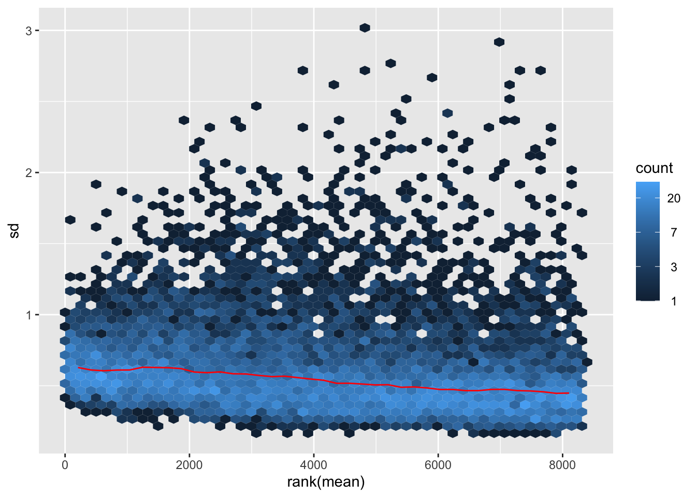
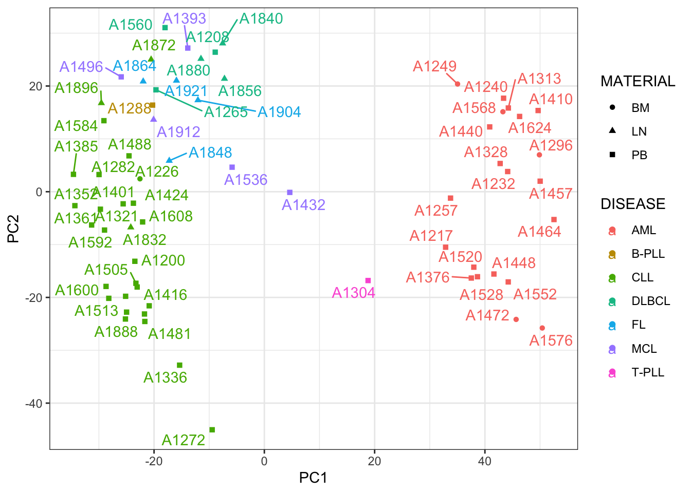
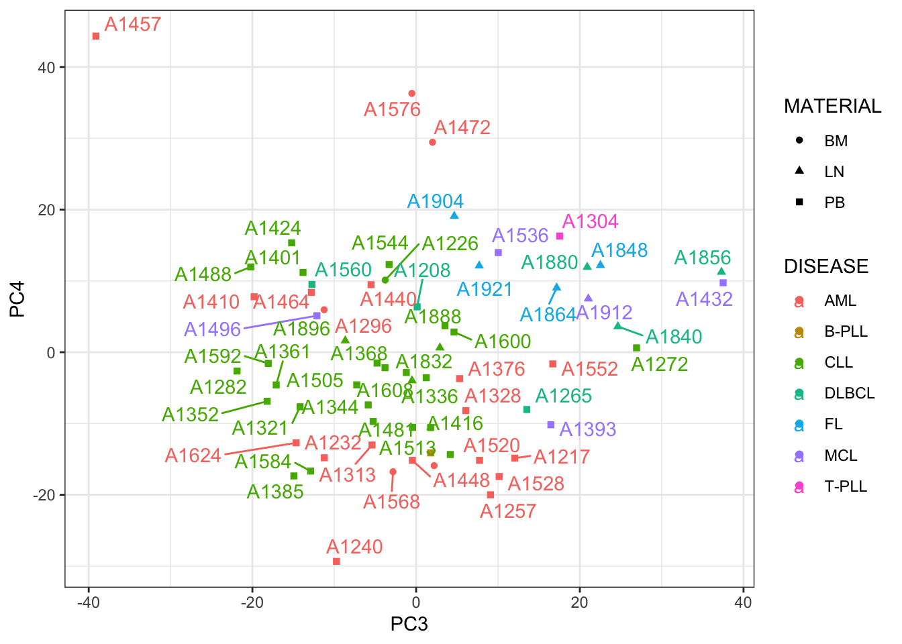

Exploratory analysis and quality check of the SMARTrial proteomic/metabolomic data
Last updated: 2024-01-09
Checks: 5 1
Knit directory: SMARTrial/analysis/
This reproducible R Markdown analysis was created with workflowr (version 1.7.0). The Checks tab describes the reproducibility checks that were applied when the results were created. The Past versions tab lists the development history.
Great job! The global environment was empty. Objects defined in the global environment can affect the analysis in your R Markdown file in unknown ways. For reproduciblity it’s best to always run the code in an empty environment.
The command set.seed(20220425) was run prior to running
the code in the R Markdown file. Setting a seed ensures that any results
that rely on randomness, e.g. subsampling or permutations, are
reproducible.
Great job! Recording the operating system, R version, and package versions is critical for reproducibility.
Nice! There were no cached chunks for this analysis, so you can be confident that you successfully produced the results during this run.
Great job! Using relative paths to the files within your workflowr project makes it easier to run your code on other machines.
Tracking code development and connecting the code version to the
results is critical for reproducibility. To start using Git, open the
Terminal and type git init in your project directory.
This project is not being versioned with Git. To obtain the full
reproducibility benefits of using workflowr, please see
?wflow_start.
Set up
Process patient clinical annotations
load("../data/01_preprocessed_invivo_data.RData")
df_invivo <- df_invivo %>% select(-c(Sonstige_Mutationen, lines_pretreatment_cat,
time_from_ED, time_from_ED_dich, Sonstige_Aberrationen,
Response_def_parameter_final, Response_not_evaluable,
Reason_response_not_evaluable, Resp_protocol_comment,
time_diarel_treatment)) %>%
mutate(across(NPM1:`Trisomy 8q24`, as.numeric)) %>%
mutate(Resp_protocol = ifelse(Resp_protocol == "na", NA, Resp_protocol))
patAnno <- DataFrame(df_invivo)
rownames(patAnno) <- patAnno$patientIDRead pdated patient annotations
patTabNew <- readxl::read_xlsx("../data/20230807_SMART_SC006_final.xlsx")Final SMARTrail patients that are not in the proteomic annotation
filter(df_invivo, !patientID %in% patTabNew$SMART_ID) %>% arrange(patientID)# A tibble: 27 × 47
patien…¹ Date_birth Sex Date_of_…² age Date_rep…³ time_…⁴ mater…⁵ tumor…⁶
<chr> <date> <fct> <date> <dbl> <date> <drtn> <fct> <dbl>
1 S005 1987-07-15 Male 2018-04-27 31 2018-05-02 5 days LN 70
2 S008 1962-07-15 Male 2018-05-04 56 2018-05-06 2 days PB 96
3 S012 1937-07-15 Male 2018-06-11 81 2018-06-13 2 days BM 59
4 S019 1967-07-15 Fema… 2018-07-18 51 2018-07-20 2 days BM 60
5 S022 1947-07-15 Male 2018-08-07 71 2018-08-10 3 days LN 77
6 S025 1994-07-15 Male 2018-10-02 24 2018-10-04 2 days PB 88
7 S027 1954-07-15 Male 2018-10-04 64 2018-10-10 6 days PB 79
8 S035 1943-07-15 Male 2018-11-23 75 2018-11-28 5 days PB 90
9 S040 1945-07-15 Male 2019-01-08 74 2019-01-10 2 days PB 76
10 S042 1941-07-15 Male 2019-01-23 78 2019-01-25 2 days PB 57
# … with 17 more rows, 38 more variables: date_diagnosis <date>,
# diagnosis <chr>, Pretreatment <chr>, lines_pretreatment <dbl>,
# pretreatment_spec <chr>, NPM1 <dbl>, CEBPA <dbl>, FLT3 <dbl>,
# FLT3_ITD_ratio <dbl>, FLT3_TKD <dbl>, IDH1 <dbl>, IDH2 <dbl>,
# `bcr-abl` <dbl>, IGHV.status <dbl>, TP53 <dbl>, BIRC3 <dbl>, CAK <dbl>,
# MLL_rearragement <dbl>, `t(15;17)` <dbl>, Del17p <dbl>, `Del 11q` <dbl>,
# `Del 13q` <dbl>, Trisomie_12q13 <dbl>, `Trisomy 8q24` <dbl>, …
# ℹ Use `print(n = ...)` to see more rows, and `colnames()` to see all variable namesPatients included currently but not in the final SMARTrial list
filter(patTabNew, !SMART_ID %in% df_invivo$patientID) %>% arrange(SMART_ID)# A tibble: 13 × 21
SMART_ID DIETR…¹ OMZ_ID SC_SA…² SC_AL…³ SEX MATER…⁴ DISEASE INITI…⁵ COMMENT
<chr> <chr> <chr> <chr> <chr> <chr> <chr> <chr> <chr> <chr>
1 A003 18SCPB… OMZP0… SC_H_S… A1200 m PB CLL Day of… <NA>
2 A006 19LN01… NA SC_H_S… A1872 m LN CLL Day of… <NA>
3 A008 19LN01… NA SC_H_S… A1856 m LN DLBCL Day of… <NA>
4 A010 19SCPB… OMZP0… SC_H_S… A1208 m PB DLBCL Day of… <NA>
5 A012 19LN01… NA SC_H_S… A1880 f LN DLBCL Day of… <NA>
6 DRP 20SCPB… OMZP0… SC_H_S… A1616 m PB CLL Day of… <NA>
7 DRP 20SCPB… OMZP0… SC_H_S… A1608 m PB CLL Day of… <NA>
8 DRP 21SCPB… OMZP0… SC_H_S… A1600 m PB CLL Day of… <NA>
9 DRP 21LN03… NA SC_H_S… A1864 m LN FL Day of… <NA>
10 DRP 19SCPB… OMZP0… SC_H_S… A1888 m PB CLL Day of… <NA>
11 DRP 20SCPB… OMZP0… SC_H_S… A1624 m PB AML Day of… <NA>
12 S059 19LN01… NA SC_H_S… A1904 f LN FL Day of… <NA>
13 S084 20SCBM… OMZP0… SC_H_S… A1576 m BM AML Day of… <NA>
# … with 11 more variables: CELL_NUMBER_THAWED <chr>, ENRICHMENT <chr>,
# DEAD_CELL_REMOVAL <chr>, THAW_BATCH <dbl>, THAW_DATE <dttm>,
# PROTEOMICS <dbl>, METABOLOMICS <dbl>, GENOMICS <dbl>,
# BACKUP_PELLET_AVAILABLE <dbl>, `CELL_NUMBER_SUBMITTED (x10^6)` <chr>,
# PERCENT_VIABILITY <dbl>, and abbreviated variable names ¹DIETRICH_ID,
# ²SC_SAMPLE_ID, ³SC_ALIQUOT_ID, ⁴MATERIAL, ⁵INITIAL_FREEZING
# ℹ Use `colnames()` to see all variable namesThese samples are indeed not in the SMARTrial drug screen data, therefore I don’t have their in vivo response data.
Wehter the information is consistent among the overlapped samples?
compareTab <- patTabNew %>% select(SMART_ID, SEX, MATERIAL, DISEASE,SC_ALIQUOT_ID) %>%
filter(SMART_ID %in% intersect(patTabNew$SMART_ID, df_invivo$patientID)) %>%
left_join(select(df_invivo, patientID, Sex, material, diagnosis) %>%
mutate(Sex = ifelse(Sex == "Male","m","f")), by = c(SMART_ID = "patientID"))
compareTab %>%
filter(SEX!=Sex | MATERIAL != material | DISEASE != diagnosis)# A tibble: 3 × 8
SMART_ID SEX MATERIAL DISEASE SC_ALIQUOT_ID Sex material diagnosis
<chr> <chr> <chr> <chr> <chr> <chr> <fct> <chr>
1 S020 f PB CLL A1304 m PB T-PLL
2 S082 f PB MZL/DLBCL A1560 f PB DLBCL
3 S013 f PB CLL/DLBCL A1265 f PB DLBCL Based on Onkostar annotation, S020 should be a male T-PLL patient. S082 and S013 are DLBCL with transformation from MZL and CLL. Here, they will be annotated as DLBCL
Create new annotation table
Also fix some potential issues
patAnno <- patTabNew %>%
left_join(df_invivo, by = c(SMART_ID = "patientID")) %>%
mutate(sampleID = str_remove(SC_SAMPLE_ID, "SC_H_"),
Aliquot.cell.number = as.numeric(`CELL_NUMBER_SUBMITTED (x10^6)`),
DISEASE = ifelse(DISEASE %in% c("MZL/DLBCL","CLL/DLBCL"),"DLBCL",DISEASE)
) %>%
mutate(DISEASE = ifelse(SMART_ID == "S020","T-PLL",DISEASE),
SEX = ifelse(SMART_ID == "S020","m",SEX)) %>%
dplyr::select(-Sex, -material, -diagnosis) %>%
column_to_rownames("sampleID") %>% DataFrame()
patAnno$sampleID <- rownames(patAnno)
dim(patAnno)[1] 66 66Proteomic analysis
Read new dataset from Karim
protTab <- read_tsv("../data/20230916_SMARTTrail_oldPrep_2nd_TimsTOF.pg_matrix.tsv")
#whether no duplication of protein groups?
all(!duplicated(protTab$Protein.Group))[1] TRUEexprMat <- select(protTab, Protein.Group, starts_with("A")) %>%
column_to_rownames("Protein.Group") %>% as.matrix()
colnames(exprMat) <- patAnno[match(colnames(exprMat), patAnno$SC_ALIQUOT_ID),]$sampleID
rowAnno <- select(protTab, !starts_with("A")) %>%
column_to_rownames("Protein.Group") %>%
dplyr::rename(protein_ids = "Protein.Ids", protein_names = "Protein.Names") %>%
DataFrame()
protData <- SummarizedExperiment(assays = list(count = exprMat),
rowData = rowAnno,
colData = patAnno[colnames(exprMat),])Quality check
Patient annotations
Read and preprocess
rowData(protData)$ID <- rowData(protData)$protein_ids
rowData(protData)$name <- rowData(protData)$protein_names
rowData(protData)$protein_ids <- NULL
rowData(protData)$protein_names <- NULL
dim(protData)[1] 10244 66Examin the data distrubution
countMat <- assay(protData)
dim(countMat)[1] 10244 66boxplot(log2(countMat))
Missing value per sample
plotTab <- tibble(sample = protData$sampleID,
perNA = colSums(is.na(countMat))/nrow(countMat),
total = colSums(log2(countMat), na.rm=TRUE),
medVal = colMedians(log2(countMat), na.rm=TRUE),
diagnosis = protData$DISEASE,
material = protData$MATERIAL)
ggplot(plotTab, aes(x=sample, y=1-perNA, fill = material)) +
geom_bar(stat = "identity") +
ylab("completeness") +
theme(axis.text.x = element_text(angle = 90, hjust = 1, vjust=0)) +
facet_wrap(~diagnosis, scale = "free_x", ncol=3)
Missing value cut-off versus number of remaining proteins
missPer <- rowSums(is.na(countMat))/ncol(countMat)
sumTab <- lapply(seq(0,1,by = 0.01), function(x) tibble(cut = x, freq = sum(missPer < x)/length(missPer))) %>% bind_rows()
ggplot(sumTab, aes(x=cut, y=freq)) + geom_line() + xlab("Missing value cut-off") + ylab("Percent remaining") +
scale_x_continuous(breaks = seq(0,1, 0.1))
Total intensity
ggplot(plotTab, aes(x=sample, y=total, fill = material)) +
geom_bar(stat = "identity") +
ylab("total intensity") +
theme(axis.text.x = element_text(angle = 90, hjust = 1, vjust=0)) +
facet_wrap(~diagnosis, scale = "free_x", ncol=3) 
Median Intensity
ggplot(plotTab, aes(x=sample, y=medVal, fill = material)) +
geom_bar(stat = "identity") +
ylab("Median intensity") +
theme(axis.text.x = element_text(angle = 90, hjust = 1, vjust=0)) +
facet_wrap(~diagnosis, scale = "free_x", ncol=3) 
Remove proteins with more than 50% missing values
cut=0.5
protData_filter <- protData[rowSums(is.na(assay(protData)))/ncol(protData) <= cut,]
dim(protData_filter)[1] 8312 66#assayNames(protData_filter) <- "norm"VSN
assay(protData_filter) <- vsn::justvsn(assay(protData_filter))Mean Sd relationship
vsn::meanSdPlot(assay(protData_filter))
Impute missing values using bpca
This is a method for imputing missing not at random data.
protData_imp <- DEP::impute(protData_filter, fun = "bpca")#add bpca imputed data
assays(protData_filter)[["imputed"]] <- assay(protData_imp)Created the final object for analysis
protSmart <- protData_filter
protSmart_raw <- protData
save(protSmart, protSmart_raw, file = "../output/protSmart_new.RData")Exploratory data analysis
PCA
exprMat <- assays(protSmart)[["imputed"]]
sds <- genefilter::rowSds(exprMat)
exprMat <- exprMat[order(sds, decreasing = TRUE)[1:5000],]
smpAnno <- colData(protSmart) %>% as_tibble()
pcRes <- prcomp(t(exprMat), scale. = FALSE, center = TRUE)
pcTab <- pcRes$x[,1:10] %>%
as_tibble(rownames = "sampleID") %>%
left_join(smpAnno)PC1 versus PC2
ggplot(pcTab, aes(x=PC1, y=PC2, col = DISEASE, shape= MATERIAL)) +
geom_point() +
ggrepel::geom_text_repel(aes(label = SC_ALIQUOT_ID)) +
theme_bw() PC3 versus PC4
ggplot(pcTab, aes(x=PC3, y=PC4, col = DISEASE, shape= MATERIAL)) +
geom_point() +
ggrepel::geom_text_repel(aes(label = SC_ALIQUOT_ID)) +
theme_bw()
Test associations between PCA and metadata
pcTab <- pcRes$x[,1:20] %>%
as_tibble(rownames = "sampleID")
metaTab <- smpAnno %>%
select(sampleID, SEX, MATERIAL, DISEASE, ENRICHMENT, INITIAL_FREEZING, DEAD_CELL_REMOVAL, THAW_BATCH,
PERCENT_VIABILITY, tumor_infiltration, Pretreatment, NPM1:Trisomy.8q24, Treatment_type, treatment_spec,chemo_pat,
Resp_protocol) %>%
mutate(across(NPM1:Trisomy.8q24, as.factor))
resTab <- jyluMisc::testAssociation(pcTab, metaTab, joinID = "sampleID") %>%
filter(p<0.05)
head(resTab) var1 var2 p
1 PC1 DISEASE 4.907247e-41
2 PC1 ENRICHMENT 1.800891e-35
3 PC1 Treatment_type 2.882743e-22
4 PC1 treatment_spec 1.435501e-20
5 PC1 chemo_pat 1.851962e-09
6 PC15 DISEASE 3.044460e-06pcTab.prot <- pcTab
sessionInfo()R version 4.2.0 (2022-04-22)
Platform: x86_64-apple-darwin17.0 (64-bit)
Running under: macOS Big Sur/Monterey 10.16
Matrix products: default
BLAS: /Library/Frameworks/R.framework/Versions/4.2/Resources/lib/libRblas.0.dylib
LAPACK: /Library/Frameworks/R.framework/Versions/4.2/Resources/lib/libRlapack.dylib
locale:
[1] en_US.UTF-8/en_US.UTF-8/en_US.UTF-8/C/en_US.UTF-8/en_US.UTF-8
attached base packages:
[1] stats4 stats graphics grDevices utils datasets methods
[8] base
other attached packages:
[1] forcats_0.5.1 stringr_1.4.1
[3] dplyr_1.0.9 purrr_0.3.4
[5] readr_2.1.2 tidyr_1.2.0
[7] tibble_3.1.8 ggplot2_3.4.1
[9] tidyverse_1.3.2 SummarizedExperiment_1.26.1
[11] Biobase_2.56.0 GenomicRanges_1.48.0
[13] GenomeInfoDb_1.32.2 IRanges_2.30.0
[15] S4Vectors_0.34.0 BiocGenerics_0.42.0
[17] MatrixGenerics_1.8.1 matrixStats_0.62.0
loaded via a namespace (and not attached):
[1] DEP_1.18.0 utf8_1.2.2 shinydashboard_0.7.2
[4] gmm_1.6-6 tidyselect_1.1.2 RSQLite_2.2.15
[7] AnnotationDbi_1.58.0 htmlwidgets_1.5.4 grid_4.2.0
[10] BiocParallel_1.30.3 norm_1.0-10.0 maxstat_0.7-25
[13] munsell_0.5.0 codetools_0.2-18 preprocessCore_1.58.0
[16] DT_0.23 withr_2.5.0 colorspace_2.0-3
[19] highr_0.9 knitr_1.39 rstudioapi_0.13
[22] ggsignif_0.6.3 mzID_1.34.0 labeling_0.4.2
[25] git2r_0.30.1 slam_0.1-50 GenomeInfoDbData_1.2.8
[28] KMsurv_0.1-5 bit64_4.0.5 farver_2.1.1
[31] rprojroot_2.0.3 vctrs_0.5.2 generics_0.1.3
[34] TH.data_1.1-1 xfun_0.31 sets_1.0-21
[37] R6_2.5.1 doParallel_1.0.17 clue_0.3-61
[40] MsCoreUtils_1.8.0 fgsea_1.22.0 bitops_1.0-7
[43] cachem_1.0.6 DelayedArray_0.22.0 assertthat_0.2.1
[46] promises_1.2.0.1 scales_1.2.0 vroom_1.5.7
[49] multcomp_1.4-19 googlesheets4_1.0.0 gtable_0.3.0
[52] affy_1.74.0 sandwich_3.0-2 workflowr_1.7.0
[55] rlang_1.0.6 genefilter_1.78.0 mzR_2.30.0
[58] GlobalOptions_0.1.2 splines_4.2.0 rstatix_0.7.0
[61] gargle_1.2.0 impute_1.70.0 hexbin_1.28.2
[64] broom_1.0.0 BiocManager_1.30.18 yaml_2.3.5
[67] abind_1.4-5 modelr_0.1.8 backports_1.4.1
[70] httpuv_1.6.6 relations_0.6-12 tools_4.2.0
[73] gplots_3.1.3 affyio_1.66.0 ellipsis_0.3.2
[76] jquerylib_0.1.4 RColorBrewer_1.1-3 MSnbase_2.22.0
[79] Rcpp_1.0.9 plyr_1.8.7 visNetwork_2.1.0
[82] zlibbioc_1.42.0 RCurl_1.98-1.7 ggpubr_0.4.0
[85] GetoptLong_1.0.5 cowplot_1.1.1 zoo_1.8-10
[88] haven_2.5.0 ggrepel_0.9.1 cluster_2.1.3
[91] exactRankTests_0.8-35 fs_1.5.2 magrittr_2.0.3
[94] data.table_1.14.8 circlize_0.4.15 survminer_0.4.9
[97] reprex_2.0.1 googledrive_2.0.0 pcaMethods_1.88.0
[100] mvtnorm_1.1-3 ProtGenerics_1.28.0 shinyjs_2.1.0
[103] hms_1.1.1 mime_0.12 evaluate_0.15
[106] xtable_1.8-4 XML_3.99-0.10 readxl_1.4.0
[109] gridExtra_2.3 shape_1.4.6 compiler_4.2.0
[112] KernSmooth_2.23-20 ncdf4_1.19 crayon_1.5.2
[115] htmltools_0.5.4 later_1.3.0 tzdb_0.3.0
[118] lubridate_1.8.0 DBI_1.1.3 dbplyr_2.2.1
[121] ComplexHeatmap_2.12.1 MASS_7.3-58 tmvtnorm_1.5
[124] jyluMisc_0.1.5 Matrix_1.5-4 car_3.1-0
[127] cli_3.4.1 vsn_3.64.0 imputeLCMD_2.1
[130] marray_1.74.0 igraph_1.3.4 parallel_4.2.0
[133] km.ci_0.5-6 pkgconfig_2.0.3 piano_2.12.0
[136] MALDIquant_1.21 xml2_1.3.3 foreach_1.5.2
[139] annotate_1.74.0 bslib_0.4.1 XVector_0.36.0
[142] drc_3.0-1 rvest_1.0.2 digest_0.6.30
[145] Biostrings_2.64.0 fastmatch_1.1-3 rmarkdown_2.14
[148] cellranger_1.1.0 survMisc_0.5.6 shiny_1.7.4
[151] gtools_3.9.3 rjson_0.2.21 lifecycle_1.0.3
[154] jsonlite_1.8.3 carData_3.0-5 limma_3.52.2
[157] fansi_1.0.3 pillar_1.8.0 lattice_0.20-45
[160] KEGGREST_1.36.3 fastmap_1.1.0 httr_1.4.3
[163] plotrix_3.8-2 survival_3.4-0 glue_1.6.2
[166] png_0.1-7 iterators_1.0.14 bit_4.0.4
[169] stringi_1.7.8 sass_0.4.2 blob_1.2.3
[172] caTools_1.18.2 memoise_2.0.1